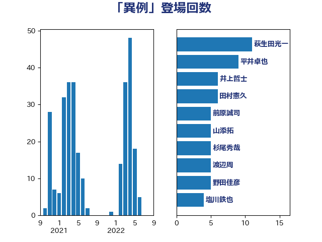

単語「異例」

| 萩生田光一 | 自由民主党 | 11 回 |
| 平井卓也 | 自由民主党 | 9 回 |
| 井上哲士 | 日本共産党 | 6 回 |
| 田村憲久 | 自由民主党 | 6 回 |
| 前原誠司 | 国民民主党 | 5 回 |
| 山添拓 | 日本共産党 | 5 回 |
| 杉尾秀哉 | 立憲民主党 | 5 回 |
| 渡辺周 | 立憲民主党 | 5 回 |
| 野田佳彦 | 立憲民主党 | 5 回 |
| 塩川鉄也 | 日本共産党 | 4 回 |
| 大串博志 | 立憲民主党 | 4 回 |
| 宮本徹 | 日本共産党 | 4 回 |
| 小泉進次郎 | 自由民主党 | 4 回 |
| 茂木敏充 | 自由民主党 | 4 回 |
| 階猛 | 立憲民主党 | 4 回 |
| 牧山ひろえ | 立憲民主党 | 3 回 |
| 田村智子 | 日本共産党 | 3 回 |
| 笠井亮 | 日本共産党 | 3 回 |
| 鈴木俊一 | 自由民主党 | 3 回 |
| 高良鉄美 | 無所属 | 3 回 |
| 佐藤茂樹 | 公明党 | 2 回 |
| 倉林明子 | 日本共産党 | 2 回 |
| 北村経夫 | 自由民主党 | 2 回 |
| 古屋範子 | 公明党 | 2 回 |
| 宮口治子 | 立憲民主党 | 2 回 |
| 小川淳也 | 立憲民主党 | 2 回 |
| 小西洋之 | 立憲民主党 | 2 回 |
| 山井和則 | 立憲民主党 | 2 回 |
| 岡田克也 | 立憲民主党 | 2 回 |
| 梶山弘志 | 自由民主党 | 2 回 |
| 水岡俊一 | 立憲民主党 | 2 回 |
| 浮島智子 | 公明党 | 2 回 |
| 田所嘉徳 | 自由民主党 | 2 回 |
| 福山哲郎 | 立憲民主党 | 2 回 |
| 紙智子 | 日本共産党 | 2 回 |
| 緑川貴士 | 立憲民主党 | 2 回 |
| 野田国義 | 立憲民主党 | 2 回 |
| おおつき紅葉 | 立憲民主党 | 1 回 |
| 下村博文 | 自由民主党 | 1 回 |
| 中根一幸 | 自由民主党 | 1 回 |
| 中谷真一 | 自由民主党 | 1 回 |
| 井上英孝 | 日本維新の会 | 1 回 |
| 井坂信彦 | 立憲民主党 | 1 回 |
| 井林辰憲 | 自由民主党 | 1 回 |
| 伊藤孝恵 | 国民民主党 | 1 回 |
| 伊藤孝江 | 公明党 | 1 回 |
| 伊藤岳 | 日本共産党 | 1 回 |
| 勝部賢志 | 立憲民主党 | 1 回 |
| 北神圭朗 | 無所属 | 1 回 |
| 原口一博 | 立憲民主党 | 1 回 |
| 吉川沙織 | 立憲民主党 | 1 回 |
| 吉良よし子 | 日本共産党 | 1 回 |
| 嘉田由紀子 | 無所属 | 1 回 |
| 堤かなめ | 立憲民主党 | 1 回 |
| 大塚耕平 | 国民民主党 | 1 回 |
| 奥野総一郎 | 立憲民主党 | 1 回 |
| 安達澄 | 無所属 | 1 回 |
| 宮本岳志 | 日本共産党 | 1 回 |
| 小沢雅仁 | 立憲民主党 | 1 回 |
| 小沼巧 | 立憲民主党 | 1 回 |
| 小田原潔 | 自由民主党 | 1 回 |
| 山岸一生 | 立憲民主党 | 1 回 |
| 岡本三成 | 公明党 | 1 回 |
| 岩田和親 | 自由民主党 | 1 回 |
| 島尻安伊子 | 自由民主党 | 1 回 |
| 川田龍平 | 立憲民主党 | 1 回 |
| 平将明 | 自由民主党 | 1 回 |
| 打越さく良 | 立憲民主党 | 1 回 |
| 新垣邦男 | 立憲民主党 | 1 回 |
| 有村治子 | 自由民主党 | 1 回 |
| 本村伸子 | 日本共産党 | 1 回 |
| 杉久武 | 公明党 | 1 回 |
| 松沢成文 | 日本維新の会 | 1 回 |
| 枝野幸男 | 立憲民主党 | 1 回 |
| 柚木道義 | 立憲民主党 | 1 回 |
| 柳ヶ瀬裕文 | 日本維新の会 | 1 回 |
| 柳本顕 | 自由民主党 | 1 回 |
| 柴山昌彦 | 自由民主党 | 1 回 |
| 梅村聡 | 日本維新の会 | 1 回 |
| 森まさこ | 自由民主党 | 1 回 |
| 武田良太 | 自由民主党 | 1 回 |
| 沢田良 | 日本維新の会 | 1 回 |
| 河西宏一 | 公明党 | 1 回 |
| 浅野哲 | 国民民主党 | 1 回 |
| 海江田万里 | 立憲民主党 | 1 回 |
| 玉木雄一郎 | 国民民主党 | 1 回 |
| 石川大我 | 立憲民主党 | 1 回 |
| 石川香織 | 立憲民主党 | 1 回 |
| 石橋通宏 | 立憲民主党 | 1 回 |
| 石田昌宏 | 自由民主党 | 1 回 |
| 礒崎哲史 | 国民民主党 | 1 回 |
| 福島みずほ | 社会民主党 | 1 回 |
| 稲田朋美 | 自由民主党 | 1 回 |
| 竹内真二 | 公明党 | 1 回 |
| 芳賀道也 | 国民民主党 | 1 回 |
| 菅義偉 | 自由民主党 | 1 回 |
| 藤原崇 | 自由民主党 | 1 回 |
| 藤巻健太 | 日本維新の会 | 1 回 |
| 西岡秀子 | 国民民主党 | 1 回 |
| 角田秀穂 | 公明党 | 1 回 |
| 赤嶺政賢 | 日本共産党 | 1 回 |
| 足立康史 | 日本維新の会 | 1 回 |
| 野田聖子 | 自由民主党 | 1 回 |
| 金村龍那 | 日本維新の会 | 1 回 |
| 鈴木貴子 | 自由民主党 | 1 回 |
| 長妻昭 | 立憲民主党 | 1 回 |
| 阿部司 | 日本維新の会 | 1 回 |
| 高木宏壽 | 自由民主党 | 1 回 |
| 高橋光男 | 公明党 | 1 回 |
| 高階恵美子 | 自由民主党 | 1 回 |
| 黄川田仁志 | 自由民主党 | 1 回 |